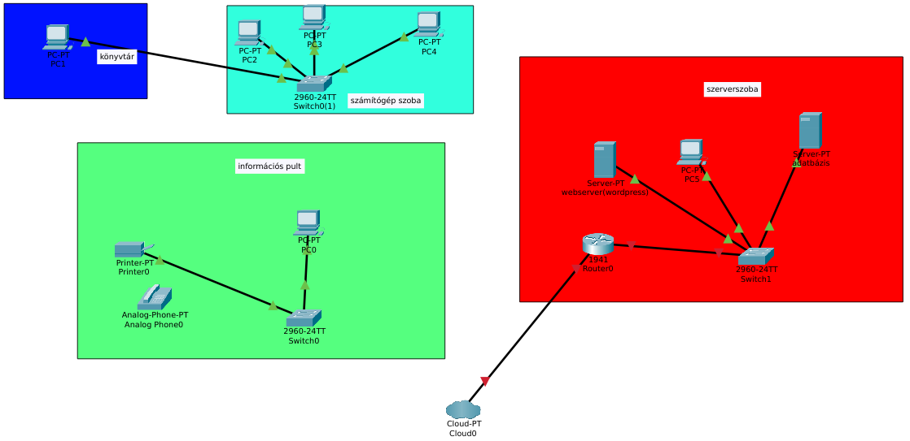
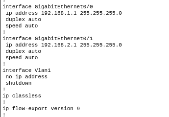
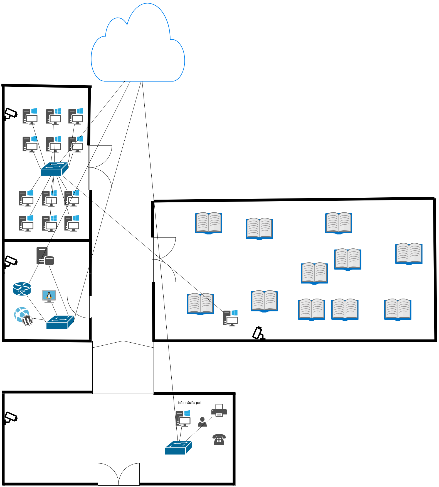
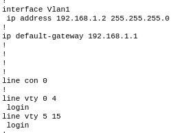
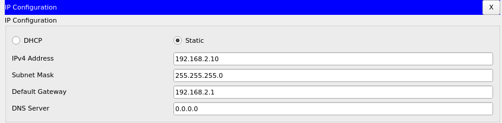

A feladat során gyakorlati ismereteket szereztem ipari környezetben használt hálózatok tervezésében és konfigurálásában. Négy funkcionális egységet (könyvtár, számítógép szoba, információs pult, szerverszoba) kapcsoltam össze egy router segítségével, biztosítva a szegmentált kommunikációt. Beállítottam a statikus routingot, az alapértelmezett átjárókat, valamint alapvető hálózati biztonsági elemeket (jelszavak, SSH, ACL). Gyakorlatot szereztem a Packet Tracer eszközeinek használatában, a hibakeresésben (ping, traceroute) és a hálózati dokumentáció készítésében. Külön figyelmet fordítottam a különböző helyiségek közötti kommunikáció biztosítására és a szerverszoba erőforrásainak (webszerver, nyomtató, telefon) elérhetőségére.
Az alábbi képernyőképek bemutatják a hálózat tervezésének és konfigurálásának főbb állomásait.

A fenti ábrán látható a teljes hálózat logikai felépítése. Router0 kapcsolja össze a négy fő szegmenst: a könyvtárat (1 PC), a számítógép szobát (3 PC), az információs pultot (1 PC) és a szerverszobát (1 PC, webszerver, nyomtató, telefon).
A routeren beállítottam a két interfész IP-címét (a switchek felé), az alapértelmezett átjárókat, valamint a szükséges statikus route-okat a négy alhálózat közötti kommunikáció biztosításához.
A router kofigurációja

A hálózat vázlata

A switch konfigurációja

A webszerver konfigurációja
